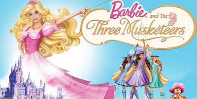
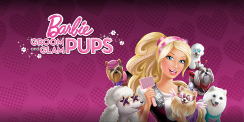
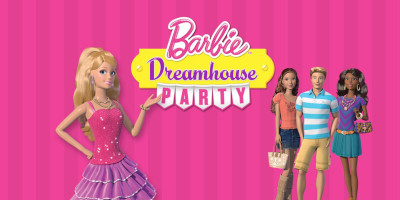
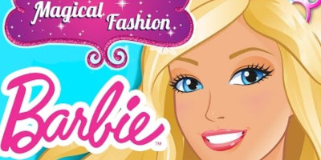
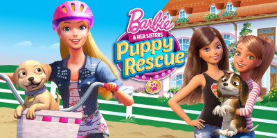
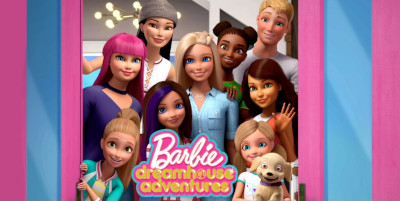

Jogos

Barbie and the Three Muskteers
Junte-se a três outras aspirantes a mosqueteira. As meninas usarão suas habilidades únicas para enfrentar obstáculos e quebra-cabeças em uma dúzia de locais do filme. Por fim, através do poder da amizade e do trabalho em equipe, as meninas descobrem um complô contra o príncipe e podem salvar o dia, realizando seus sonhos e se tornando verdadeiras mosqueteiras!

Barbie Groom and Glam Pups
É um jogo de animal de estimação virtual no qual os jogadores tratam, treinam, vestem e mostram os filhotes em um ambiente de alta moda sob o olhar atento de sua mentora, Barbie. Com seis raças de cães disponíveis em forma de filhote, selecionadas para uso no jogo com base na popularidade e potencial dramático de estilo.
O jogo conta com recursos adicionais.

Barbie Dreamhouse Party
Neste game, baseado na série web Barbie Life in the Dreamhouse, você terá a chance de controlar as protagonistas do desenho – nada menos do que Barbie, Teresa, Nikki e Raquelle – em vários minigames divertidos. Estes vão de partidas competitivas entre as quatro garotas e brincadeiras cooperativas.

Barbie Magical Fashion
Magia Barbie Fashion – você pode se transformar em uma princesa, uma sereia, uma fada, um herói ou tudo ao mesmo tempo! Faça uma linda roupa, estilize seu cabelo, adicione acessórios brilhantes e maquiagem brilhante! Você está pronto para uma jornada mágica? Tudo é possível quando você sonha grande com a Barbie!

Barbie and Her Sisters: Puppy Rescue
Junta-te à Barbie e às suas irmãs – Skipper, Stacie e Chelsea – na procura de pistas para encontrar e salvar cachorrinhos perdidos que estejam em apuros. Faça um check-up aos cachorrinhos com a Skipper no Abrigo Canino das Irmãs Roberts, cuide do seu pelo no Centro de Dia para Cachorrinhos da Chelsea ou ensine-lhes novos truques no Acampamento para Cães com a Stacie!

Barbie Dreamhouse Adventures
Crie a sua própria experiência na Casa dos Sonhos da Barbie! Você pode projetar cada cômodo. junte-se a nós para um monte de atividades divertidas na Casa dos Sonhos: cozinhar, dançar ou festas épicas na piscina! Saia e explore Malibu com meu conversível rosa para atividades ainda mais divertidas. Siga-nos em emocionantes aventuras na Casa dos Sonhos, onde tudo é possível!